2015年12月英语六级真题(第1套)
english-cet6-2015-12-01

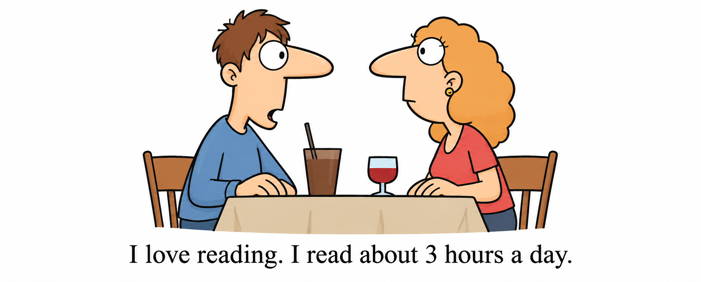
两人隔桌交谈，男子说每天阅读约三小时的彩色重绘漫画
共 21 张已接入的重绘图。左侧是重排页保留的原图素材，右侧是重绘图；“整页原版”可查看完整试卷。颜色可以不同，文字、数字、箭头与结构应一致。
所有条目初始为“待检查”，不代表已通过人工审计。结论和备注尝试保存在当前浏览器；建议导出一份结果。
english-cet6-2015-12-01

两人隔桌交谈，男子说每天阅读约三小时的彩色重绘漫画
english-cet6-2015-12-02
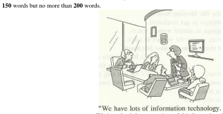
会议室里五人围绕信息技术讨论的彩色重绘漫画
english-cet6-2015-12-03

办公室里坐在电脑前的人与门口持杯者交谈的彩色重绘漫画
cet6:2012-06-01:figure-001-004

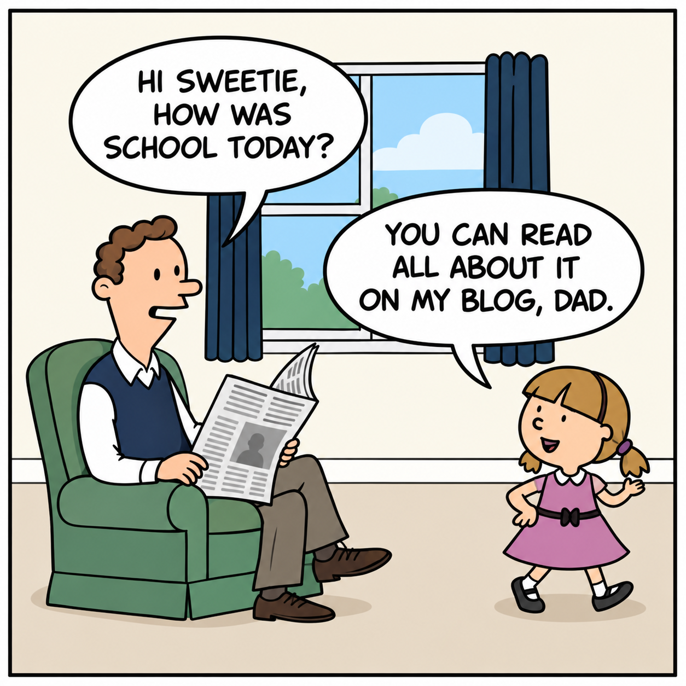
父亲在扶手椅上读报，女儿站在右侧；父亲问学校情况，女儿说可以在博客读到。
cet6:2014-12-01:figure-001-003

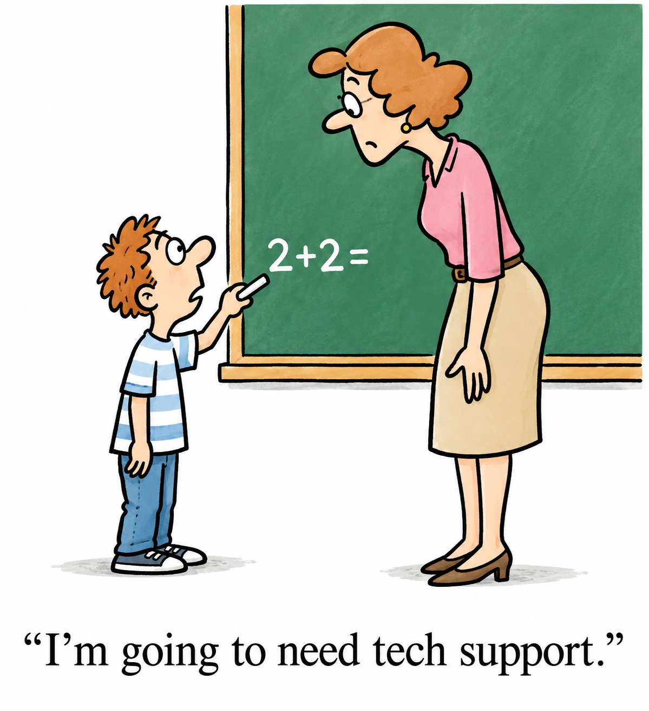
孩子指着黑板上的 2+2=，老师站在右侧；下方写着“I’m going to need tech support.”
cet6:2014-12-02:figure-001-004

图书馆访客手持书本，柜台后的工作人员指向右侧书架。
cet6:2014-12-03:figure-001-002

招聘者读着简历，告诉戴学位帽的求职者其他申请者都是 Ph. D. s。
cs408-2019-answers-p006-b005
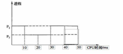
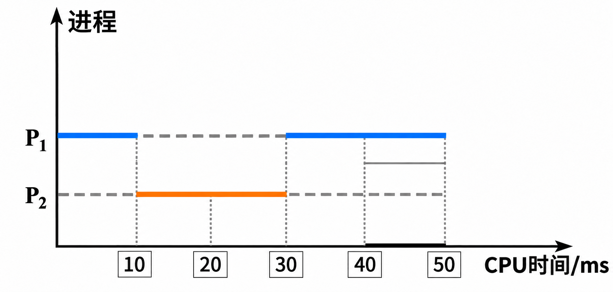
第 27 题进程 \(P_1\)、\(P_2\) 调度时间图
cs408-2020-answers-p007-b006

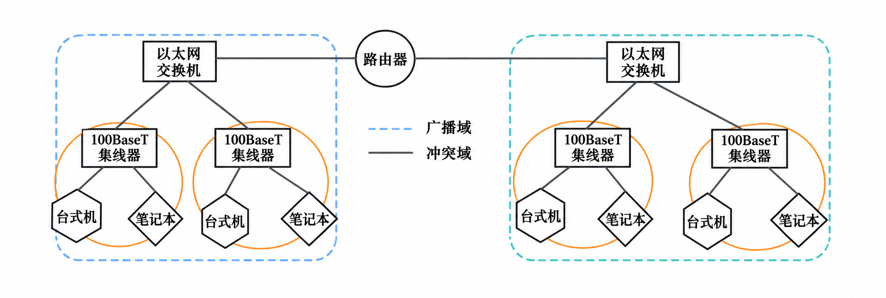
第 35 题网络拓扑及广播域、冲突域示意图
cs408-2016-questions-p005-b001

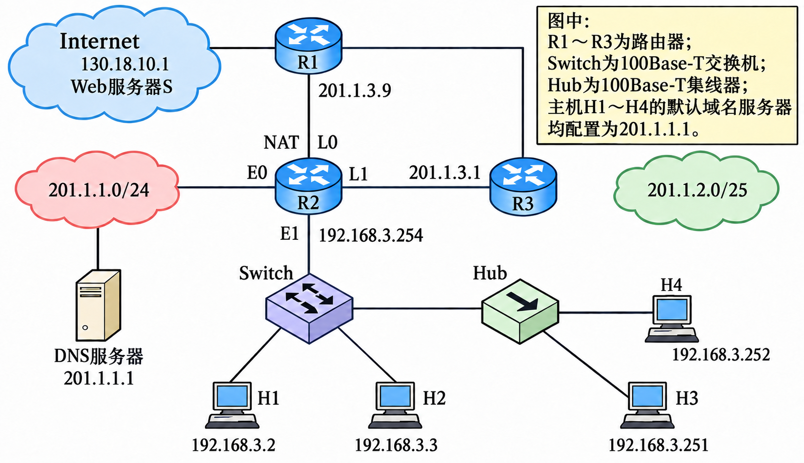
题 33～41 图：路由器、交换机、集线器和主机网络拓扑
cs408-2023-questions-p004-b008

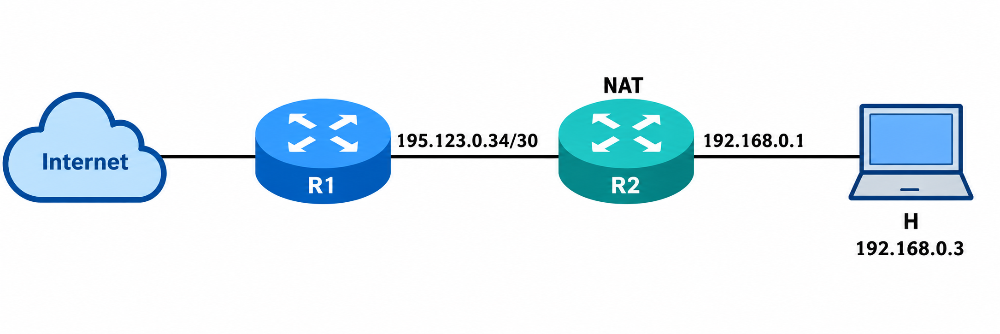
第38题包含NAT路由器R2的网络拓扑
2010-complete-p004-b010

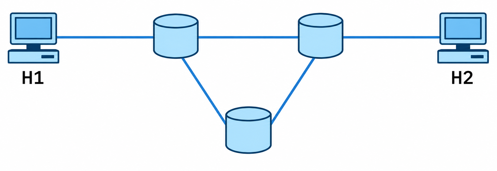
第 34 题分组交换网络拓扑
2014-complete-p002-b000

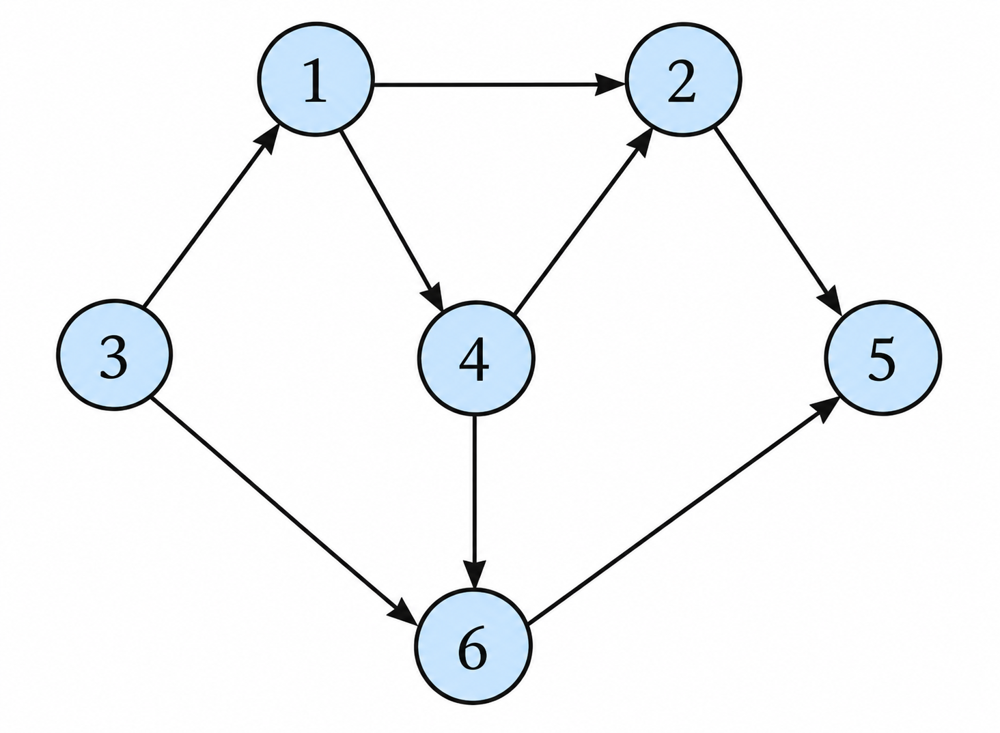
第7题有向图
2014-complete-p004-b006

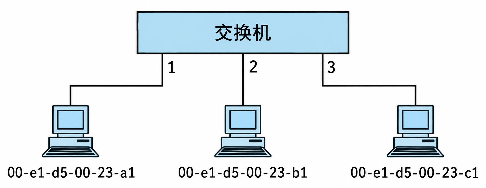
题34交换机与三台主机的连接拓扑
2014-complete-p005-b009

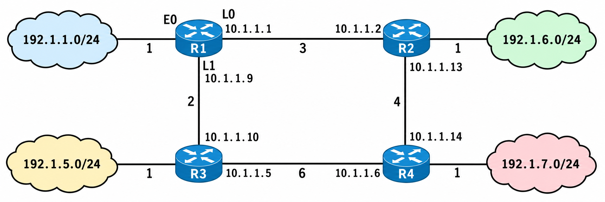
第42题R1构造的网络拓扑
cet4:2015-06-01:figure-001-003

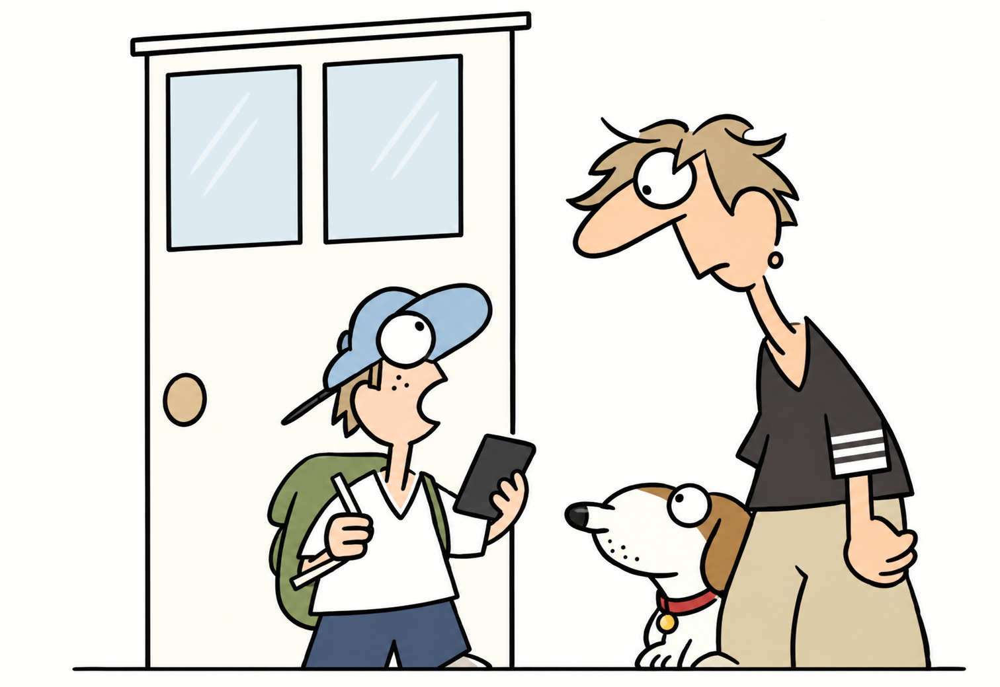
一名戴帽孩子拿着手机和纸张，与门边的大人交谈，旁边有一只小狗。
cet4:2015-06-02:figure-001-004
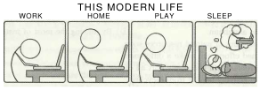
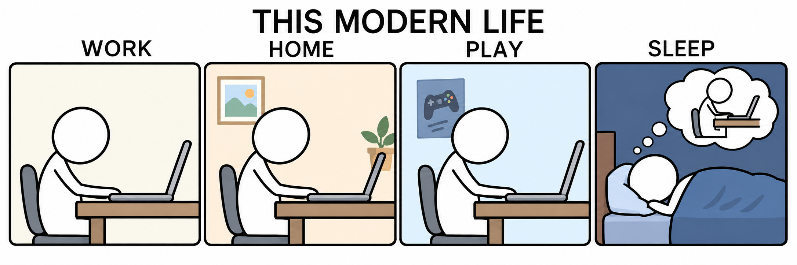
四格漫画“THIS MODERN LIFE”：工作、居家和娱乐时都在用电脑，睡觉时还梦见电脑。
cet4:2015-06-03:figure-001-003

一名站立者与沙发上的人交谈，两人都拿着读物，旁边有壁画和台灯。
politics:2010-questions-p001-b008

一只北极熊停留在海上的小块浮冰上
english-kaoyan-2000-fishing
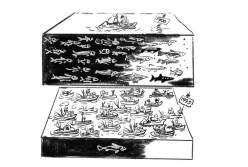
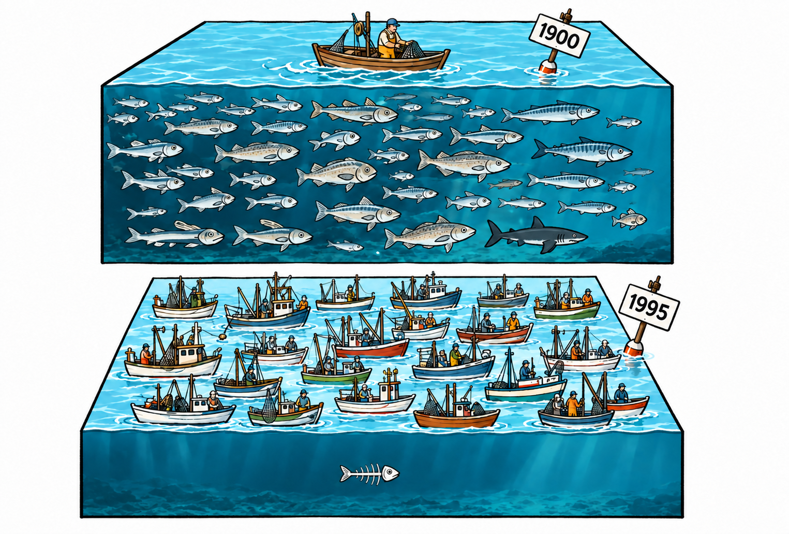
1900 与 1995 年商业捕鱼的对比（彩色重绘）
english-kaoyan-2001-lamp
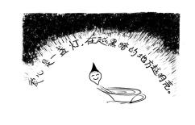
爱心是一盏灯，在越黑暗的地方越明亮（彩色重绘）
没有符合筛选条件的插图。